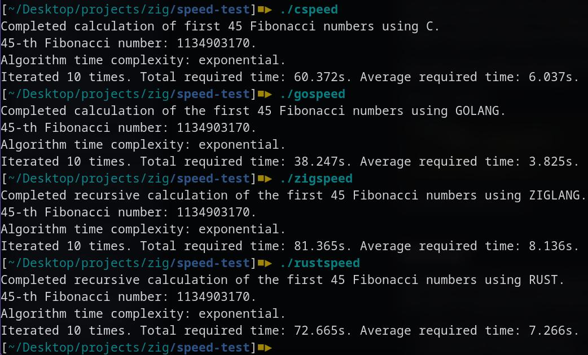
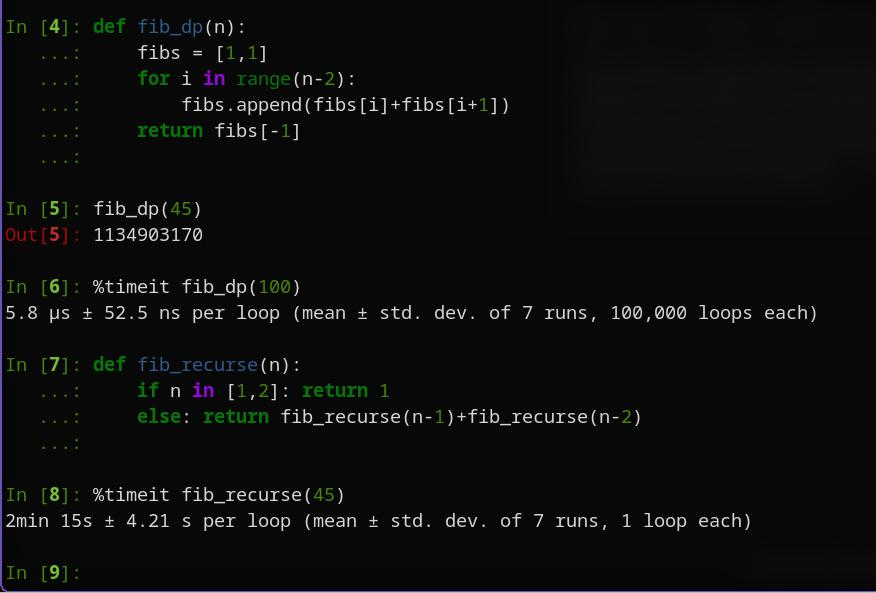

Exploring the Zig Programming Language: Part 2
- tags
- #Programming #Computer-Science #Zig #C-Cpp #Golang #Rust #Python
- published
- reading time
- 4 minutes
Zig is said to be “blazingly fast”. But what exactly is “blazingly fast”?
Zig is certainly one of the more fun languages I’ve coded in. But how fast is it? Let’s compare it with some other top contenders, such as C, Rust, and Go. For scale, we will also put to test one of the more popular interpreted languages, Python.
But How Do We Measure Their Speed?
As computers are stupendously fast these days, they perform most tasks in the blink of an eye. It’s hard to write a piece of code that will be both small (i.e. can be written within a few minutes) and computationally intensive (i.e. require a noticeable amount of execution time). A hack we can use, though, is using a stupid algorithm for a simple task. For example, for our purposes, I’ve chosen the recursive computation of the Fibonacci sequence, which has an exponential time complexity (compare this to the dynamic programming approach, which has a linear time complexity). This means, for example, the execution time for calculating the N-th Fibonacci number with this algorithm will be, say, x times that of the (N-1)-th Fibonacci number, and x^2 times that of (N-2)-th Fibonacci number, and so on. So as we scale the problem upwards, the execution time increases geometrically.
The Code
We will compute the 45-th Fibonacci number as our speed test, using the algorithm mentioned above. We calculate it a total of 5 times and take the average execution time as our comparison metric. Here’s the code in Zig.
const std = @import("std");
const stdout = std.io.getStdOut();
pub fn main() !void{
const start_time: i64 = std.time.microTimestamp();
const N: u32 = 45;
const loop_count = 5;
var last: u64 = undefined;
last = loop(loop_count, N);
const end_time: i64 = std.time.microTimestamp();
const duration: f32 = @as(f32,@floatFromInt(end_time - start_time)) / std.math.pow(f32,10,6);
const avg: f32 = duration / @as(f32, @floatFromInt(loop_count));
try stdout.writer().print("Completed recursive calculation of the first {d} Fibonacci numbers using ZIGLANG.\n{d}-th Fibonacci number: {d}.\nAlgorithm time complexity: exponential.\nIterated {d} times. Total required time: {d:.3}s. Average required time: {d:.3}s.\n", .{N, N, last, loop_count, duration, avg});
}
fn fib_recursive(n: u32) u64{
if (n==1 or n==2) {
return 1;
} else {
return fib_recursive(n-1) + fib_recursive(n-2);
}
}
fn loop(n_loop: u32, n_fib: u32) u64{
for (1..n_loop-1) |_|{
_ = fib_recursive(n_fib);
}
return fib_recursive(n_fib);
}
The exact same algorithm was implemented in C, Rust, Go, and Python for the sake of comparison. And what were the results?
The Results
I was kind of surprised with the results. I’d expected either Rust or C to top the list, but neither did. And I expected Zig to do at least better than Go, but that also didn’t happen. See the outputs for yourselves.

Zig came in last, requiring just above 8 seconds on average to calculate the 45th Fibonacci number. Rust was 3rd, requiring about 7 seconds to do the same. C was 2nd, taking about 6 seconds. And most surprisingly, Go came in first, beating the likes of Zig and Rust by nearly a factor of 2 - taking less than 4 seconds to calculate the 45th Fibonacci number! Wow!
By the way, I tried the same thing out with Python, one of the most popular interpreted languages out there. I couldn’t wait long enough to run the Python code for 10 iterations, as a single iteration took the Python code more than 2 minutes (135.182s), several times slower than even the slowest compiled binary by Zig. I am a Python stan, but interpreted languages are no match for compiled languages, sorry!
Does It Matter, Tho?
Modern compilers make a lot of optimizations under the hood to generate highly performant machine code, to the point that if you manually wrote a programme to do the same in Assembly, your code is almost guaranteed to be slower than that written using any of C, Go, Rust, or Zig. The point I’m trying to make here is that the compiler plays a big role in determining the execution time. If you compile the code with different compilers, you will get different machine code output, often with significant performance differences. So while you interpret the results, keep in mind that the speed differences reflect under-the-hood optimisations that you and I do not, and need not, know about. For most real-world applications, we hardly ever use an exponential-time algorithm, even when there are no other exact solution algorithms. The essence of computer science is not necessarily in doing things the right way, but in getting things done. In the Fibonacci number problem, fortunately, a trick called memoization or caching changes the exponential runtime algorithm into a linear runtime algorithm. This turns the calculation into something orders of magnitude faster - Python, which couldn’t calculate even the 45th Fibonacci in 2 minutes, can now calculate the 100th Fibonacci number in less than 6 microseconds!

So our take home message today: it doesn’t matter which language is the “fastest”. What matters is your algorithms.
That’s all for today folks. Have a great day, thanks for reading!